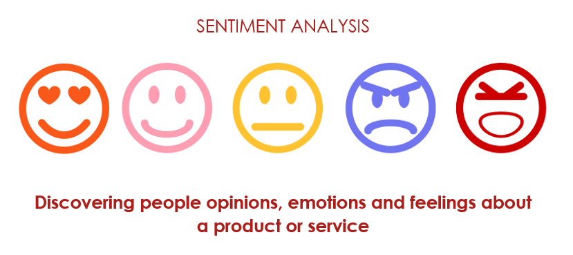

Sentiment Analysis can be used as a tool to rate a product on its different aspects based on the customer reviews. It is a tool to extract opinion from a given text. The reviews are given a positive or negative score based on customer satisfaction. This can help the manufacturer to identify what the customers like or dislike about the product. Sentiment Analysis is now widely being used by organizations to analyze public opinion on different topics. It is now being used in several other fields, some examples include elections result prediction, analyzing public opinion on policy announcements, etc.
The project involves performing aspect-based sentiment analysis on the mobile phone reviews given by customers on the amazon e-commerce website. The mobile phones are analyzed on 3 aspects - Battery, Display, Camera as well as the most-talked about features of the corresponding phones.. Thus, each mobile phone will be given an overall score as well as separate scores in the above-mentioned aspects. This will also allow us to compare the different phones using their customer reviews. This will enable a new customer to not only read the manufacturers description but also analyze the user experience of others so that he/she can make an informed purchase
